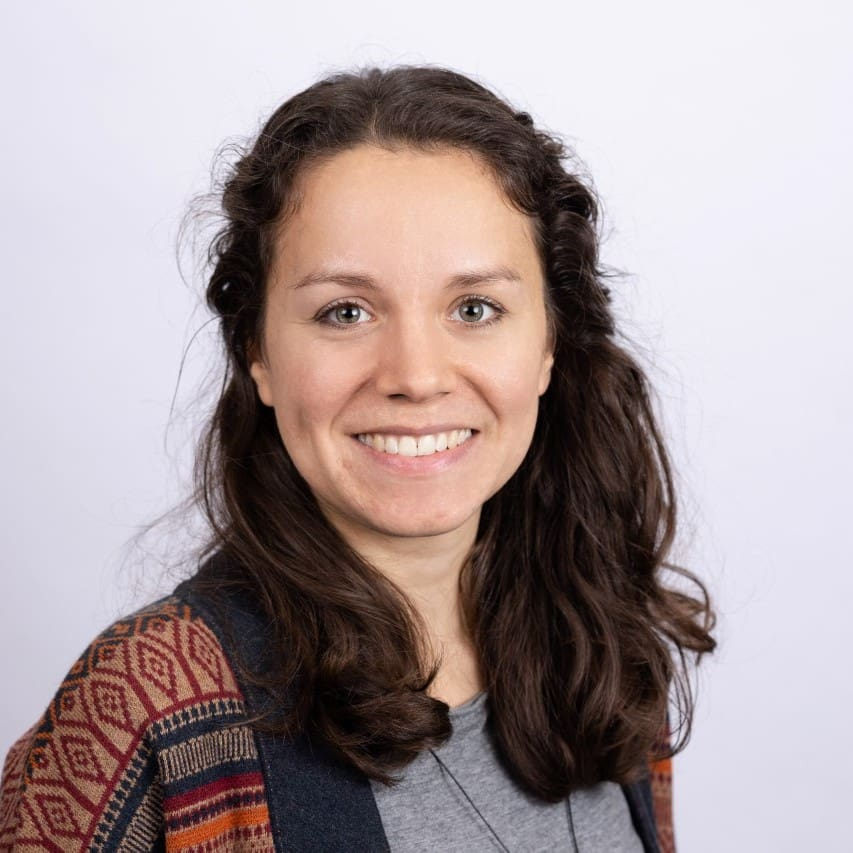

Greenhouse gases from space
Machine learning methods that make retrievals of greenhouse gas concentrations from satellite observations faster.
Machine learning for observing the Earth, from greenhouse gases measured by satellites to bird migration seen by weather radar.

Postdoctoral researcherSRON Space Research Organisation Netherlands
Reflected sunlight, measured by satelliteSchematic illustration. Coastlines: Natural Earth.
Fiona Lippert is a postdoctoral researcher at SRON Space Research Organisation Netherlands. She develops machine learning methods that speed up the retrieval of greenhouse gas concentrations from satellite observations.
She completed her PhD in AI for Science at the University of Amsterdam in 2025. Her thesis combined ideas from fluid dynamics with deep learning to forecast and interpret nocturnal bird migration across Europe from weather radar data.
Her research sits where data-driven and mechanistic modelling meet: hybrid and surrogate models, probabilistic inference and explainable AI. Outside work she bakes, hikes and climbs.
Machine learning methods that make retrievals of greenhouse gas concentrations from satellite observations faster.
Monitoring and forecasting nocturnal bird migration across Europe from networks of weather radars, and reconstructing fine-scale flight patterns from radar measurements.
Hybrid models that build a mechanistic description of a process into neural networks, so predictions stay physically consistent and remain interpretable.
PhD thesis, University of Amsterdam · 2025
Hybrid models that combine fluid-dynamics principles with deep learning to forecast continental-scale migration, and methods to reconstruct fine-scale movement from radar. Defence announcement.
ICML AI for Science workshop · 2024
An extended hybrid model that forecasts migration on arbitrary grids and at locations without radar coverage. Read the paper.
Methods in Ecology and Evolution · 2022
Introduces FluxRGNN, a recurrent graph neural network built on a mechanistic description of movement, used for 72-hour forecasts of bird migration. Read the paper or see the code.
Find Fiona’s publications on Google Scholar and her code on GitHub.